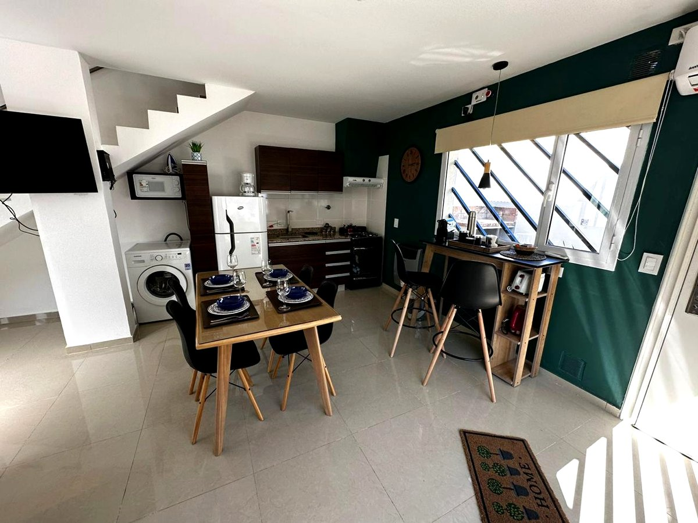
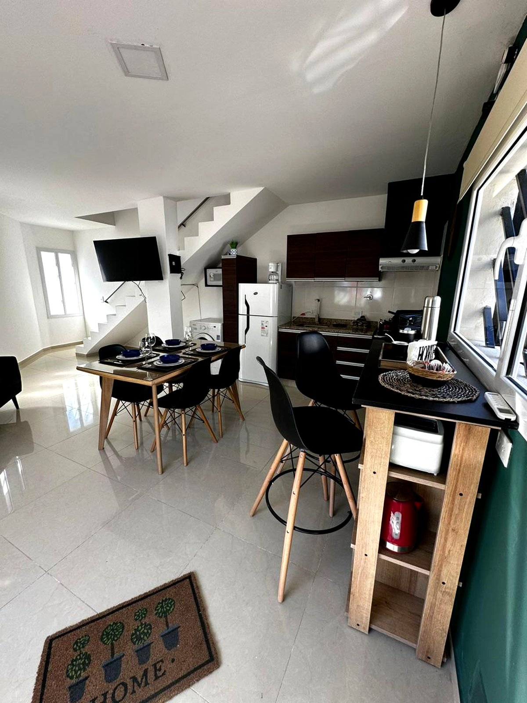

Construcción de dúplex en Cipolletti
Para vivir o para rentar, con la ejecución resuelta de punta a punta
Consultar por WhatsAppPor qué el dúplex funciona bien en el Alto Valle
El dúplex resuelve un problema concreto del mercado regional: el costo del suelo urbano en Cipolletti y Fernández Oro creció más rápido que la capacidad de compra, y la vivienda unifamiliar aislada en lote propio quedó fuera del alcance de una parte importante de la demanda.
Al dividir el lote entre dos unidades, el terreno pesa la mitad en el costo final de cada una. Eso baja el ticket de entrada sin resignar lo que la gente de la región efectivamente busca: entrada independiente, patio propio, cochera y no compartir palier ni expensas.
Para quien construye para rentar, la lógica es la misma vista del otro lado: dos unidades en un lote generan dos flujos de alquiler sobre una sola compra de suelo y una sola obra, con economías de escala en fundaciones, medianeras e instalaciones.
Lo que define si un dúplex funciona
La diferencia entre un dúplex que se alquila rápido y uno que queda vacío rara vez está en las terminaciones. Está en tres decisiones de proyecto que se toman al principio y después no se pueden cambiar.
La aislación acústica de la medianera. Es el reclamo número uno de quien vive en dúplex mal resueltos, y es imposible de corregir una vez construido sin rehacer el muro. Se resuelve en el proyecto o no se resuelve.
La orientación y la independencia real. Que las dos unidades tengan asoleamiento razonable y que el acceso, el patio y el tendedero de una no invadan la privacidad de la otra. Un dúplex donde una unidad es claramente peor que la otra se alquila peor y se vende peor.
La relación entre superficie y programa. Meter tres dormitorios donde entran dos cómodos produce ambientes que nadie usa. En el Alto Valle, dos dormitorios bien resueltos con buen espacio común suelen alquilarse mejor que tres apretados.

Cómo lo ejecutamos
Aplicamos el mismo proceso que en vivienda unifamiliar: proyecto ejecutivo, gemelo digital 3D y ejecución con control integral. En dúplex el modelo digital rinde todavía más, porque hay que coordinar dos juegos completos de instalaciones sanitarias, eléctricas y de gas que comparten muros y llegadas de servicio.
Ese cruce de instalaciones es la fuente más habitual de retrabajo en este tipo de obra. Resolverlo en el modelo antes de ejecutar evita romper mampostería terminada, que es donde se van los plazos y el presupuesto.
También te acompañamos en lo previo: verificar que el lote admita la subdivisión que tenés en mente, y qué implica en términos de retiros, factor de ocupación y conexiones de servicios. Es información que conviene tener antes de firmar la compra del terreno.

Qué resolvemos en un dúplex
Aislación acústica
Tratamiento de la medianera resuelto en proyecto, no improvisado en obra.
Orientación
Estudio de asoleamiento para que ninguna de las dos unidades quede castigada.
Instalaciones
Doble juego de instalaciones coordinado en el modelo 3D antes de ejecutar.
Independencia
Accesos, patios y cocheras sin cruces entre unidades.
Lógica de renta
Programa dimensionado según lo que el mercado del Alto Valle efectivamente alquila.
Documentación
Documentación técnica para permiso municipal y para la futura subdivisión.
Dúplex para inversión: lo que hay que mirar
Si el objetivo es renta, el número que importa no es el costo por metro cuadrado sino la relación entre la inversión total y el alquiler que esa unidad puede sostener en el mercado real de Cipolletti o Fernández Oro. Son dos cuentas distintas y se confunden seguido.
Un dúplex que costó menos por metro pero se alquila un 20% más barato porque quedó mal orientado o con acústica deficiente rinde peor que uno que costó algo más. La rentabilidad se define en el proyecto tanto como en el precio de obra.
El otro factor es el plazo. Cada mes de obra adicional es un mes sin ingreso y con capital inmovilizado. Por eso trabajamos con el proyecto cerrado antes de empezar: las modificaciones en obra son la principal causa de estiramiento de plazos.
Si querés ver proyectos en desarrollo, están en la sección de Oportunidades.